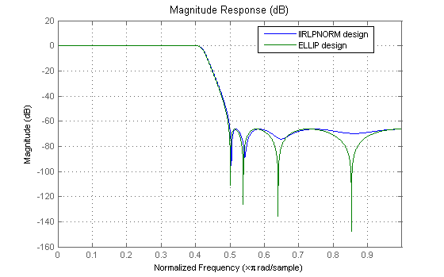
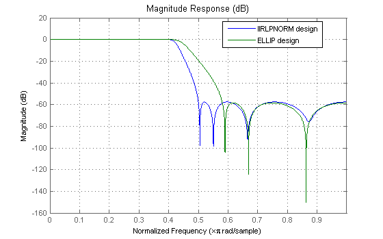
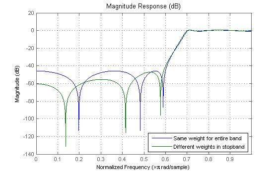
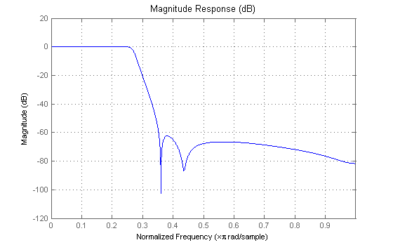
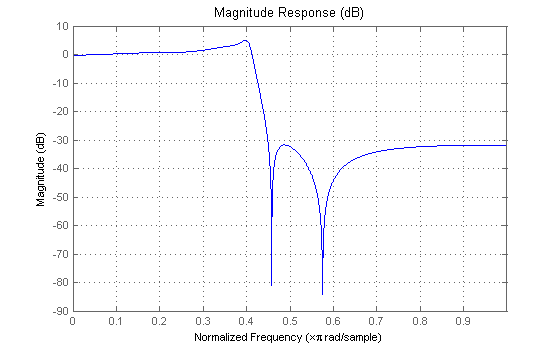
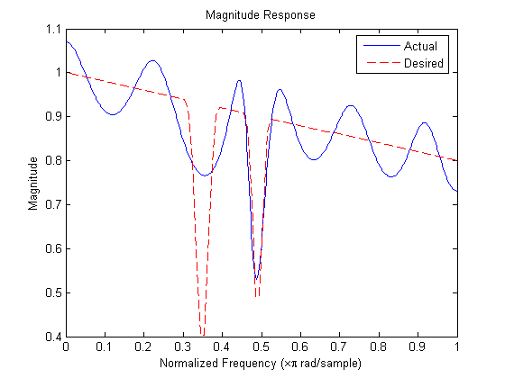

This demo shows some of the key features of the IIRLPNORM function. This function uses a least-Pth unconstrained optimization algorithm to design IIR filters with arbitrary magnitude response.
The IIRLPNORM algorithm differs from the traditional IIR design algorithms in several aspects: - The designs are done directly in the Z-domain. No need for bilinear transformation. - The numerator and denominator order can be different. - One can design IIR filters with arbitrary magnitude response in addition to the basic lowpass, highpass, bandpass, and bandstop.
The syntax for IIRLPNORM is similar to that of FIRPM except that in addition to a frequency vector, a magnitude vector, and a weight vector, one must specify the frequency edges. The frequency edges must be a subset of the frequency vector and basically contains the frequency points that mark the boundary between do-care and don't-care frequency bands.
For simple designs however (lowpass, highpass, etc.), the frequency edges are the same as the frequency vector. Here's the basic lowpass
N = 8; % Numerator order M = N; % Denominator order F = [0 0.4 0.5 1]; % Frequency vector E = F; % Frequency edges A = [1 1 0 0]; % Magnitude vector [b,a] = iirlpnorm(N,M,F,F,A); hiirlpnorm = dfilt.df2(b,a);
For comparison purposes, consider this elliptic filter design
[z,p,k]=ellip(N,0.0084,66.25,0.4); [s,g] = zp2sos(z,p,k); hellip = dfilt.df2sos(s,g); hfvt = fvtool(hiirlpnorm,hellip); legend(hfvt,'IIRLPNORM design','ELLIP design'); set(hfvt, 'Color', [1 1 1])
The response of the two filters is very similar. Zooming into the passband accentuates the point. However, the magnitude of the filter designed with IIRLPNORM is not constrained to be less than 0 dB.
While we can get very similar designs as elliptic filters, IIRLPNORM provides greater flexibility. For instance, say we change the denominator order
M = 6; % Denominator order
[b,a] = iirlpnorm(N,M,F,E,A);
hiirlpnorm = dfilt.df2(b,a);
With elliptic filters (and other classical IIR designs) we must change both the numerator and the denominator order.
[z,p,k]=ellip(M,0.0084,58.36,0.4); [s,g] = zp2sos(z,p,k); hellip = dfilt.df2sos(s,g); set(hfvt, 'Filters', [hiirlpnorm,hellip]); legend(hfvt,'IIRLPNORM design','ELLIP design');
Clearly, the elliptic design (in green) now results in a much wider transition width.
Similar to FIRPM or FIRLS, we can weight the optimization criteria to alter the design as we see fit. However, unlike FIRPM, we have the extra flexibility of providing different weights for each frequency point instead of for each frequency band.
Consider the following two highpass filters
N = 6; % Numerator order M = 4; % Denominator order F = [0 0.6 0.7 1]; % Frequency vector E = F; % Frequency edges A = [0 0 1 1]; % Magnitude vector W1 = [10 10 1 1]; % Weight vector for first design W2 = [100 10 1 1]; % Weight vector for second design [b1,a1] = iirlpnorm(N,M,F,E,A,W1); % First design [b2,a2] = iirlpnorm(N,M,F,E,A,W2); % Second design h1 = dfilt.df2(b1,a1); h2 = dfilt.df2(b2,a2); set(hfvt, 'Filters', [h1,h2]); legend(hfvt,'Same weight for entire band',... 'Different weights in stopband');
The first design uses the same weight per band (10 in the stopband, 1 in the passband). The second design uses a different weight per frequency point. This provides a simple way of attaining a sloped stopband which may be desirable in some applications. The extra attenuation over portions of the stopband comes at the expense of a larger passband ripple and transition width.
Roughly speaking, the optimal design is achieved by minimizing the error between the actual designed filter and an ideal filter in the Pth-norm sense. Different values of P result in different designs. When specifying the P-th norm, we actually specify two values, i.e. P = [Pinit Pfinal] where Pinit is the initial value of P used by the algorithm and Pfinal is the final (the actual) value for which the design is optimized. Starting the optimization with a smaller Pinit value aids in the convergence of the algorithm.
By default, the value for P is [2 128]. So that the algorithm starts optimizing in the 2-norm sense but finally optimizes the design in the 128-norm sense. The 128-norm in practice yields a good approximation to the inifinity-norm. So that the designs tend to be equiripple. For a least-squares design, we should set P to [2 2]. For instance, consider the following lowpass filter
N = 10; % Numerator order M = 7; % Denominator order F = [0 .25 .35 1]; % Frequency vector E = F; % Frequency edges A = [1 1 0 0]; % Magnitude vector W = [1 1 1 1]; % Weight vector P = [2 2]; % Least-squares design [b,a] = iirlpnorm(N,M,F,E,A,W,P); set(hfvt, 'Filters', dfilt.df2(b,a), 'Legend', 'off');
Another of the important features of IIRLPNORM is its ability to design filters other than the basic lowpass, highpass, bandpass and bandstop. We now show a few examples:
Here's a filter for noise shaping when simulating a Rayleigh fading wireless communications channel
F = 0:0.01:0.4;
A = 1.0 ./ (1 - (F./0.42).^2).^0.25;
F = [F 0.45 1];
A = [A 0 0];
edges = [0 0.4 0.45 1];
W = ones(1, length(A));
[b,a]=iirlpnorm(4, 6, F, edges, A, W);
set(hfvt, 'Filters', dfilt.df2(b,a));
 The following design models the absorption of light in a certain gas. The resulting filter turns out to have approximately linear-phase.
npts = 100; N = 12; % Numerator order M = 12; % Denominator order F = linspace(0,1,npts); % Frequency vector E = [F(1) F(30) F(31) F(41) F(42) F(47) F(48) F(56) F(57) 1]; As = ones(1,npts)-F*0.2; Absorb = [ones(1,30),(1-0.6*bohmanwin(10))',... ones(1,5), (1-0.5*bohmanwin(8))',ones(1,47)]; A = As.*Absorb; W = [ones(1,30) ones(1,10)*.2 ones(1,60)]; [b,a]=iirlpnorm(N,M,F,E,A,W); [H,w] = freqz(b,a); figure plot(w/pi,abs(H)); hold on; plot(F,A,'r--'); xlabel('Normalized Frequency (\times\pi rad/sample)') ylabel('Magnitude') title('Magnitude Response') legend('Actual','Desired') set(gcf, 'Color', [1 1 1])